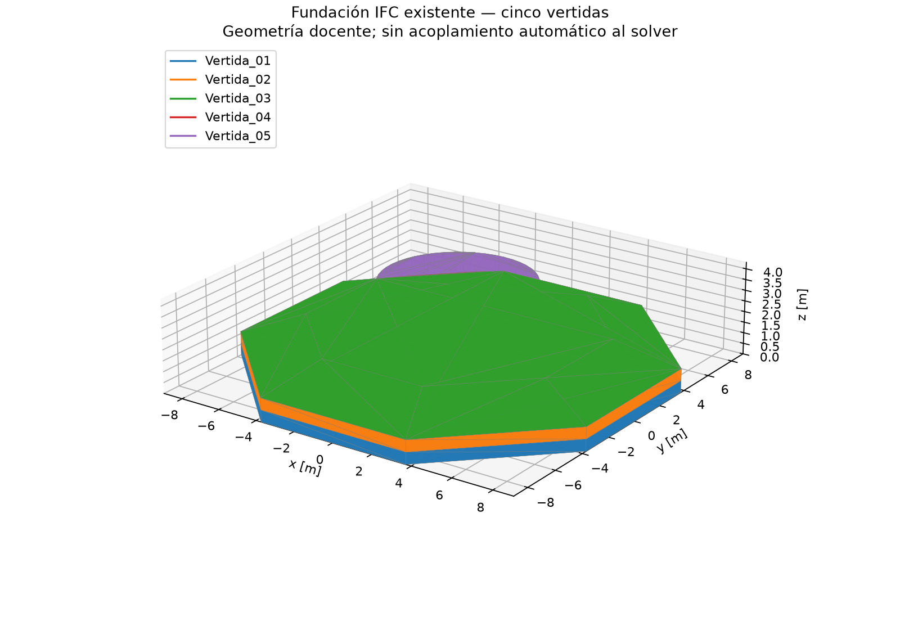
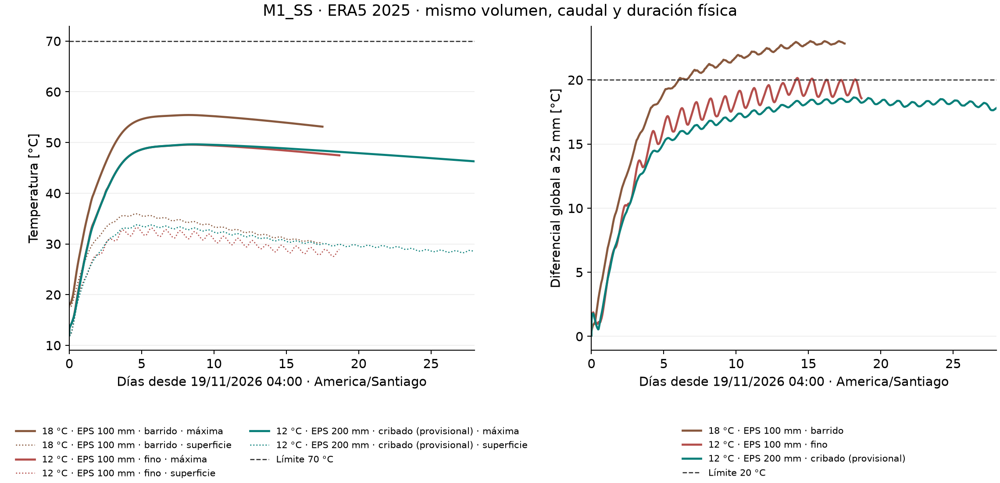

Volumen y duración
La suma sin redondear es 636,775 m³. A 40 m³/h, la colocación continua toma 15,92 h.
DEFENSA FINAL · P02 MCOC
EPS de 200 mm + hormigón fresco a 12 °C
Candidato elegido para la defensa. Cumplió los límites térmicos en los seis escenarios de malla fina con activación conjunta. El margen sigue siendo sensible a la malla.
Ver la corrida crítica
ALTERNATIVAS
Dos curvas de hidratación M1 × tres historias climáticas ERA5. Una corrida excede si su temperatura máxima supera 70 °C o su diferencial supera 20 °C.
| Caso | Duración | T máx. | Peor Δ | Riesgo conjunto | Resultado |
|---|
| Curva | Clima | T máx. | Δ máx. | Horizonte | Resultado | Curvas |
|---|
RESULTADOS TÉRMICOS
El diferencial resta la mínima cercana a la superficie de la máxima del hormigón activo al mismo instante.
EVIDENCIA VISUAL
Abre las figuras para verlas a tamaño completo.




SUPUESTOS Y VERIFICACIÓN
La activación sucesiva del candidato se comprobó en barrido. La verificación a 0,20 m cubre solo la fila M1 SS / ERA5 2025.
La suma sin redondear es 636,775 m³. A 40 m³/h, la colocación continua toma 15,92 h.
El cálculo usa el caudal, la densidad, el calor específico y la reducción de temperatura. La potencia eléctrica dependerá del equipo y las pérdidas.
Emparejar sensores en secciones comparables. Medir simultáneamente y registrar ambiente, colocación y cambios de protección. El esquema muestra la propuesta de monitoreo.